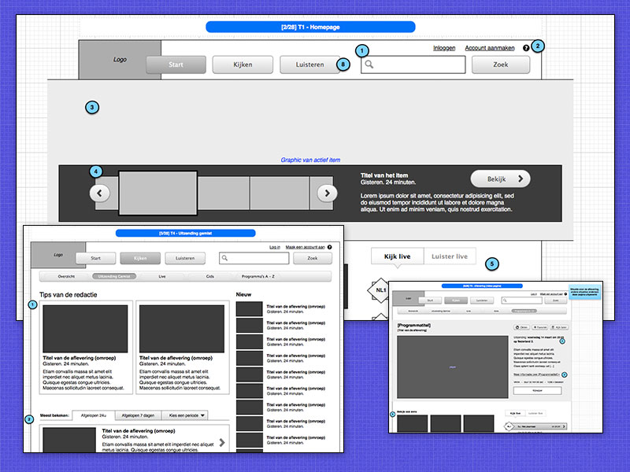
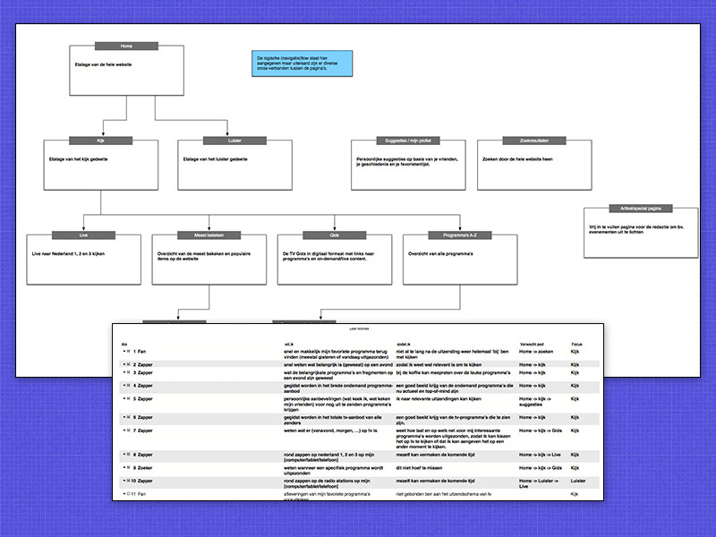
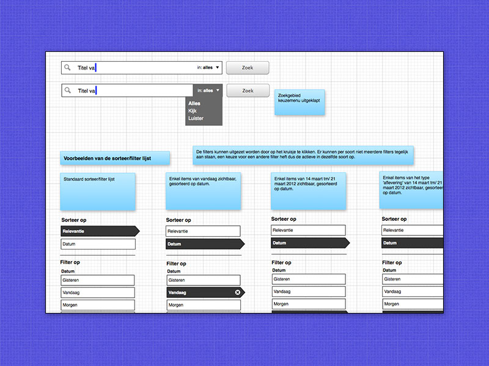

Bij NPO is een herpositionering gaande waarbij steeds meer onderdelen van de instelling onder de naam "NPO" worden gebracht, daar is deze website een voorbeeld van. De nieuwe site geeft de bezoeker ook de mogelijkheid om live Nederland 1, 2 en 3 te kijken via de website.
De website is volledig responsive uitgevoerd, bevat een rijke video ervaring en heeft diverse TV, Radio en Uitzending Gemist onderdelen verenigd.
Ik was verantwoordelijk voor het interactie-ontwerp. Het grafisch ontwerp is verzorgd door Made by Hiro.
Bekijk de website: NPO.nl
  
{% endblock %}